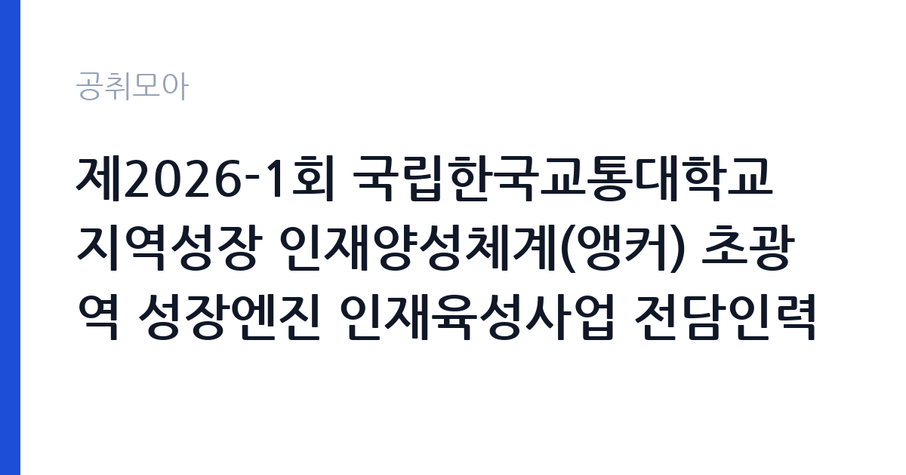

[국가기관] 제2026-1회 국립한국교통대학교 지역성장 인재양성체계(앵커) 초광역 성장엔진 인재육성사업 전담인력 신규채용 공고
국립한국교통대학교 · 충북 · 마감 2026-11-03 (D-8) · 출처 나라일터

한눈에 보는 모집 조건
| 기관 | 국립한국교통대학교 |
|---|---|
| 공고명 | 제2026-1회 국립한국교통대학교 지역성장 인재양성체계(앵커) 초광역 성장엔진 인재육성사업 전담인력 신규채용 공고 |
| 고용형태 | 정규직 |
| 근무지 | 충북 |
| 게시일 | 2026-10-27 |
| 마감일 | 2026-11-03 (D-8) |
지원자격, 이렇게 읽으세요
- 선임연구원 0명 연구원 0명
- 접수 ~2026-11-03 마감
- 세부 조건은 원문 공고문 확인
정규직 채용은 기간의 정함이 없는 근로계약을 전제로 합니다. 수습 기간을 두고 평가한 뒤 정규직으로 확정하는 절차가 일반적이며 기관의 인사 규정과 임금 체계를 적용받습니다. 이번 공고는 국립한국교통대학교에서 직접 진행하는 자체 전형으로, 응시자격과 제출서류는 공고문에 항목별로 제시됩니다. 국책사업 전담 인력은 관련 사업 운영 경력과 행정 실무 능력을 함께 봅니다. 계약직이나 기간제로 채용되는 경우가 많아 사업 기간과 재계약 조건을 먼저 확인해야 합니다. 예산 집행과 정산 경험, 보고서 작성 능력이 실질적인 평가 기준입니다. 사업 분야에 대한 이해도 요구되므로 지원 전에 사업 개요와 연차별 목표를 읽어 두어야 합니다. 서류는 접수 마감 이후 보완이 되지 않으므로 자격 요건과 증빙 서류를 마감 전에 모두 갖춰야 합니다. 공고문에 명시된 우대 사항은 해당 여부를 확인해 증빙을 첨부해야 가점이 반영됩니다. 공고문의 응시자격 표를 보면 자격 항목이 여러 줄로 나뉘어 있으므로, 각 줄을 하나씩 체크하며 본인 해당 여부를 표시해 두면 누락을 줄일 수 있습니다.
이 공고의 포인트
이 공고의 첫 번째 포인트는 고용 형태입니다. 수습 기간 평가를 통과하면 기간의 정함이 없는 신분이 되어 고용이 안정됩니다. 두 번째는 업무 범위가 명확하다는 점입니다. 국책사업 전담 직무로 채용되므로 배치 이후 담당 업무가 크게 흔들리지 않습니다. 세 번째는 근무지입니다. 충북 지역 근무로 수도권 공고에 비해 지원자 분포가 넓지 않아 상대적으로 경쟁이 분산되는 경우가 있습니다. 모집 인원이 적은 만큼 지원자 한 명 한 명의 서류 완성도가 당락에 크게 작용합니다. 같은 직무 공고 중에서는 접수 마감이 가장 빨라 일정을 앞당겨 잡아야 합니다. 다만 선발 인원이 0명으로 많지 않아 자격을 갖춘 지원자가 몰리면 경쟁률이 높아질 수 있습니다.
전형은 어떻게 진행되나
서류전형과 면접전형 외에 직무수행능력 평가가 붙는 경우가 있습니다. 평가 방식은 공고문에 구체적으로 적혀 있으므로 어떤 항목에 배점이 높은지 먼저 파악하십시오. 면접에서는 지원 동기보다 실제 업무 경험에 대한 질문이 많고, 답변의 구체성이 평가를 가릅니다. 전형 일정은 서류 마감 이후 빠르게 진행되므로 연락 가능한 번호를 정확히 기재하고 문자와 메일을 수시로 확인해야 합니다. 최종 단계에서는 결격사유 조회와 신체검사가 진행됩니다. 전형 일정이 공고문에 날짜로 명시되어 있으니 달력에 옮겨 두고 준비하십시오.
이런 분께 추천해요
- 국책사업 운영이나 정산 실무 경험이 있는 분
- 유관 기관과 협의를 이끌어본 경험이 있는 분
- 사업 기간 내 성과 목표를 관리할 수 있는 분
지원 전 체크리스트
- 응시자격 요건과 경력 기준을 충족하는가 — 경력은 증명서로 입증해야 합니다
- 수습 기간과 정규직 전환 조건을 확인했는가
- 제출서류 목록을 모두 준비했는가 — 누락 시 서류 단계에서 탈락합니다
- 접수 마감 2026-11-03 이전에 접수 방식을 확인해 제출했는가
모집 일정과 제출 타이밍
접수 마감은 2026-11-03이고 공고는 2026-10-27에 게시되었습니다. 준비 기간 7일 안에 서류 작성, 증빙 발급, 접수를 모두 마쳐야 하므로 주말을 포함해 일정을 미리 나누는 것이 좋습니다. 특히 경력 기술서나 직무수행계획서를 요구하는 공고는 작성에 시간이 걸리므로 첫날 초안을 잡으십시오. 서류 합격자 발표와 면접 사이 간격이 짧은 경우가 많아 면접 예상 질문은 서류 제출 전에 정리해 두는 편이 유리합니다. 마감 직전에는 접속이 몰리므로 여유를 두고 제출하십시오. 마감 이후에는 어떤 사유로도 접수가 인정되지 않으므로 하루 전 제출을 목표로 하십시오. 충북 근무지는 연구기관과 공공시설이 분산되어 있어 근무지 위치를 구체적으로 확인하십시오. 마감까지 일주일 안팎이 남아 서류 준비와 증빙 발급을 병행해야 합니다. 선발 인원이 한두 명 수준이라 지원자 개개인의 서류 완성도가 그대로 평가에 반영됩니다.
직무 이해하기: 국가기관
국립한국교통대학교는 철도·항공·교통 분야 인재를 양성하는 국립대학입니다. 지역 성장 인재양성 사업 같은 국책 과제를 수행하며, 전담 인력은 사업 기획과 참여 기업 발굴, 성과 관리를 맡습니다. 사업 기간이 정해진 계약직 채용이 일반적입니다. 국책사업 전담 인력은 정부 지원 사업의 계획 수립과 집행, 성과 관리를 맡습니다. 사업 참여 기관과 기업을 발굴해 협약을 체결하고, 참여자 모집과 교육 과정 운영을 조정합니다. 사업비 집행과 정산, 실적 증빙 관리가 업무의 큰 부분을 차지하고, 정부 부처와 지자체에 보고 자료를 제출합니다. 사업 기간이 정해져 있어 연차별 목표를 달성해야 하고, 중간 평가와 최종 평가를 준비해야 합니다. 대학이나 공공기관의 사업단에 배치되어 기존 행정 조직과 협업하는 구조가 일반적입니다. 업무는 혼자 처리하기보다 부서 단위로 나눠 진행되므로 담당 구역과 협업 범위를 입사 초에 확인하는 것이 중요합니다. 업무 강도와 근무 시간대는 부서 배치에 따라 달라지므로 면접에서 확인하는 것이 가장 정확합니다.
자기소개서 작성 팁
지원서는 사업 단위 성과로 구성하십시오. 맡았던 사업의 규모, 참여 인원, 달성률, 집행 예산을 수치로 제시하면 신뢰가 생깁니다. 정산과 감사 대응 경험은 이 직무에서 특히 강한 소재입니다. 지원 사업의 연차별 목표를 읽고 본인이 맡을 수 있는 부분을 구체적으로 제안하면 준비도가 드러납니다. 문항별 글자 수 제한을 먼저 확인하고, 각 문항의 첫 문장에 결론을 배치하는 방식이 읽기 쉽습니다. 지원 동기는 기관의 어떤 사업에 기여하겠다는 한 문장으로 시작하고, 이어서 본인의 경험을 근거로 붙이십시오. 감점을 피하려면 다른 기관에 보낼 수 있는 범용 문장을 그대로 쓰지 않는 것이 중요합니다. 기관 이름과 사업명이 문장 안에 자연스럽게 들어가야 준비도가 드러납니다.
면접 준비 포인트
면접에서는 사업 운영 실무를 얼마나 아는지 확인합니다. 참여자 모집이 목표에 미달할 때 어떤 대안을 쓸지, 사업비 집행 증빙이 맞지 않을 때 어떻게 처리하는지 묻습니다. 유관 기관과 협의를 이끌어낸 경험도 자주 질문합니다. 사업 기간이 한정되어 있으므로 기간 내 성과 목표를 어떻게 세울지 답하십시오. 답변은 상황, 판단, 조치의 순서로 정리하면 전달이 분명해집니다. 모르는 질문에는 모른다고 밝히고 확인 방법을 제시하는 편이 억지 답변보다 낫습니다. 마지막에는 근무 의사와 함께 2026-11-03 이후 일정에 언제든 응할 수 있다는 점을 전달하십시오. 답변 시간이 짧게 정해져 있는 경우가 있으므로 핵심 문장을 먼저 말하고 근거를 붙이는 방식이 유리합니다.
급여·근무조건 읽는 법
국립한국교통대학교의 구체적인 보수 수치는 이 공고 원문의 처우 항목과 보수표에서 확인해야 합니다. 공시 자료로 확인되지 않은 금액은 이 글에서 추정해 제시하지 않습니다. 국책사업 전담 인력은 대부분 계약직으로 채용되어 사업 인건비 기준과 기관 임금 규정을 함께 적용받습니다. 연봉 총액과 계약 기간이 계약서에 명시되므로 월 급여보다 총 보상으로 비교해야 합니다. 성과급과 수당 포함 여부를 확인하십시오. 2026년 적용 최저임금은 시급 10,320원, 월 환산 2,156,880원(주 40시간·209시간 기준)입니다. 고용노동부 고시 제2025-47호로 확정된 금액입니다. 공고문에 금액이 제시되지 않은 항목은 원문 보수표나 처우 설명에서 확인해야 하며 확인되지 않은 수치는 쓰지 않는 것이 원칙입니다. 비교할 때는 월 급여뿐 아니라 상여·명절휴가비·복지포인트·초과근무수당까지 포함한 연간 총액으로 계산하십시오. 기간제라면 계약 기간 동안의 총액을, 무기계약이라면 호봉 상승과 정년까지의 누적 소득을 기준으로 판단하는 편이 정확합니다.
자주 묻는 질문
- 선발 인원은 몇 명인가요?
공고문 기준 0명입니다. 직종별로 인원이 나뉘는 경우가 있으니 모집분야 항목을 함께 확인하십시오. - 근무지는 어디인가요?
충북 지역의 국립한국교통대학교 소속 근무지입니다. 세부 주소와 출퇴근 조건은 원문 공고문에서 확인할 수 있습니다. - 보수는 얼마인가요?
채용 신분(정규직)과 기관 임금 규정에 따라 정해지며 구체적인 금액은 공고문 처우 항목에 제시됩니다. 금액이 공개되지 않은 경우에는 원문의 보수표를 확인하십시오.
함께 보면 좋은 공고
[국가기관] 2026년 제8회 서천우체국 기간제 상시계약집배원(농어촌) 채용 계획서 — 마감 2026-11-03[국가기관] 전북대학교 기획처 연구원(기간제 계약직원) 채용 공고 — 마감 2026-11-04[국가기관] 2026년도 국회기록원 기간제근로자 채용시험 공고(참관해설) — 마감 2026-10-30출처: 나라일터 공개정보를 바탕으로 공취모아가 정리한 안내글입니다. 모집 조건·일정은 변경될 수 있으니 지원 전 반드시 원문 공고문을 확인하세요. 본 글은 정보 제공용이며 합격을 보장하지 않습니다.